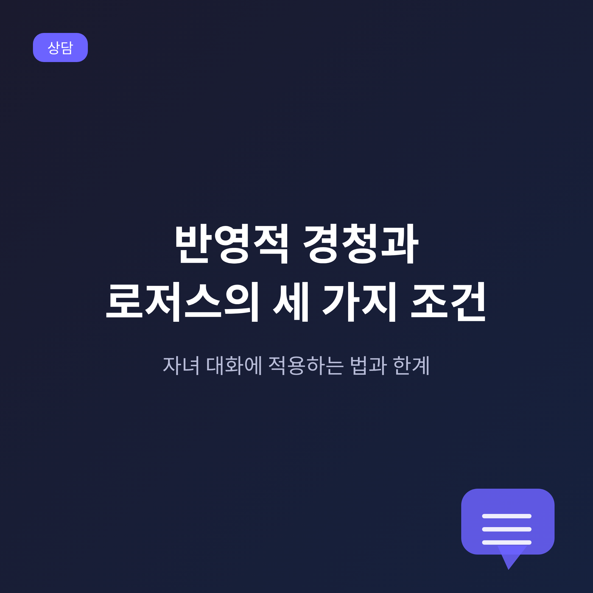
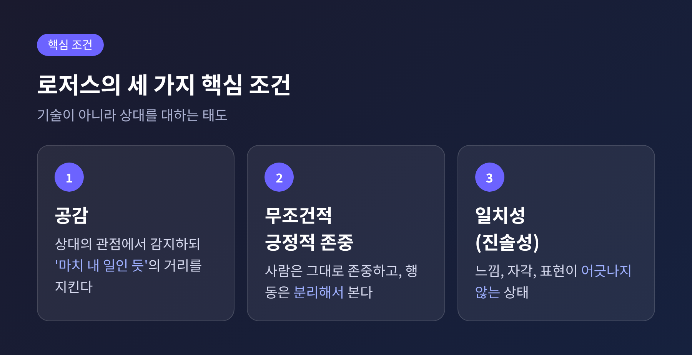
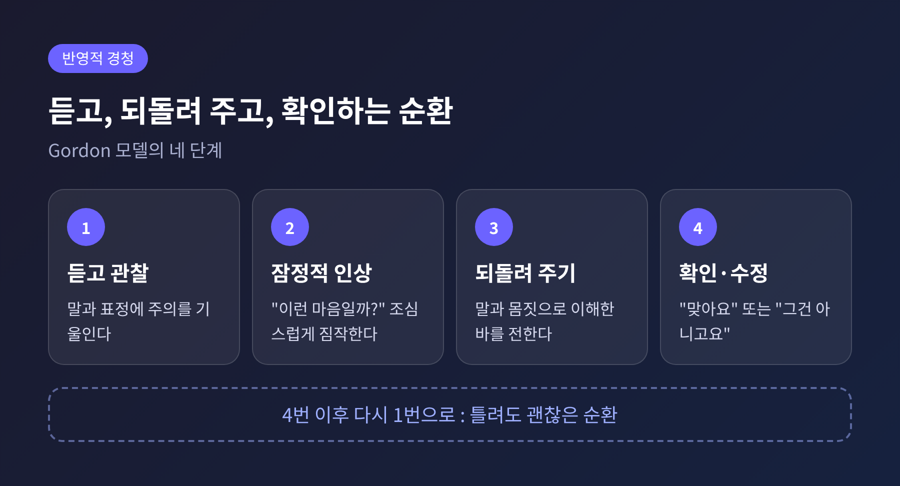
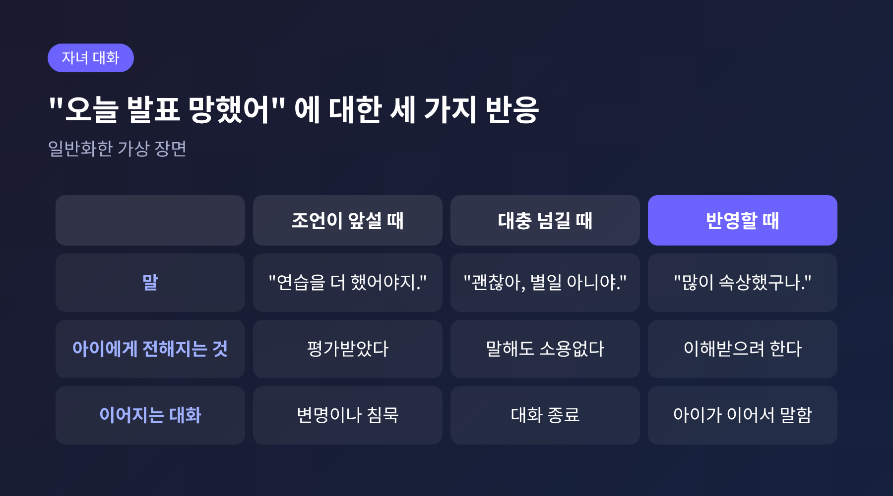
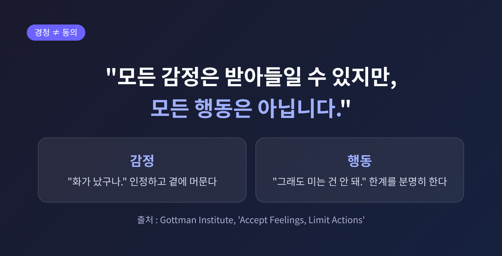
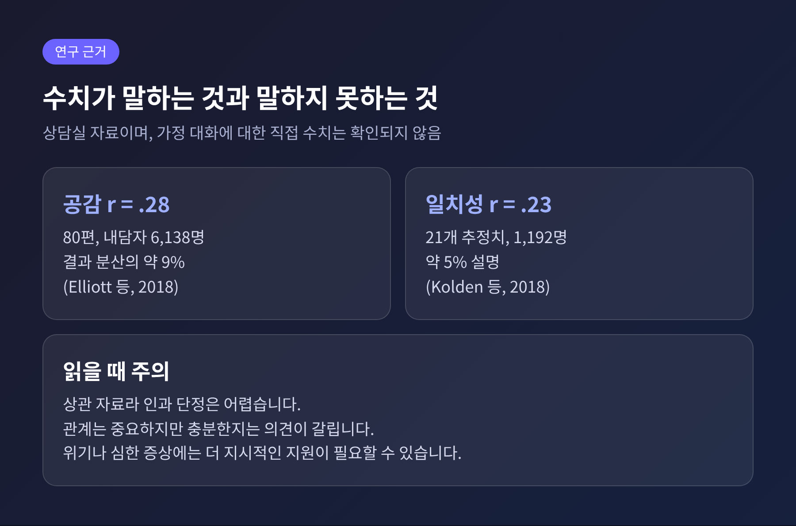

반영적 경청과 로저스의 세 가지 조건, 자녀 대화에 적용하는 법과 한계

이번 글에서는 칼 로저스 인간중심 상담의 세 가지 핵심 조건과 반영적 경청을 정리해 보겠습니다.
공감, 무조건적 긍정적 존중, 일치성이 대화에서 어떻게 작동하는지, 가족과 자녀 대화에 어떻게 옮길 수 있는지 살펴봅니다.
경청이 곧 동의는 아니라는 점, 그리고 이 접근의 한계도 함께 다룹니다.
세 줄 요약
- 세 조건은 상대를 이해하는 기술이 아니라 상대를 대하는 태도에 가깝습니다.
- 반영적 경청은 들은 내용을 잠정적으로 되돌려 주고, 상대가 확인하거나 고치게 하는 순환입니다.
- 감정은 받아들이되 행동에는 한계를 둘 수 있습니다. 이해와 동의는 다른 일입니다.
■ 로저스가 말한 세 가지 조건
로저스는 1957년 논문에서 상담에서 변화가 일어나기 위한 여섯 가지 조건을 제시했습니다. 그중 상담자가 갖추어야 할 세 가지가 흔히 핵심 조건으로 불립니다.
첫째는 공감입니다. 상대의 내적 준거틀에서 경험을 감지하되, '마치 내 일인 듯'이라는 성질을 잃지 않는 것입니다. 상대의 슬픔에 함께 잠기는 것이 아닙니다. 상대의 세계를 느끼면서도 나 자신으로 서 있는 것입니다.
둘째는 무조건적 긍정적 존중입니다. 상대를 그 자체로 가치 있는 사람으로 받아들이고, 사람과 행동을 분리해서 봅니다. 해로운 행동을 승인한다는 뜻은 아닙니다.
셋째는 일치성, 곧 진솔성입니다. 느끼는 것과 알고 있는 것, 표현하는 것이 어긋나지 않는 상태를 말합니다. 전문가의 가면 뒤에 숨지 않습니다. 일치성을 가장 근본적인 조건으로 보는 설명도 있습니다. 공감과 존중이 진짜일 때에야 의미가 있기 때문입니다.

■ 왜 이 조건들이 필요한가
로저스는 아이가 보호자의 기준을 채울 때만 인정받으면, 그 기준을 마음속에 들여놓는다고 보았습니다. 이를 '가치의 조건'이라 부릅니다. 사람은 이 조건에 맞지 않는 경험을 부인하거나 왜곡하게 되고, 그 틈에서 불안이 생긴다고 설명합니다.
무조건적 긍정적 존중은 이에 대한 응답입니다. 잘해서가 아니라 존재 자체로 존중받는 경험을 주는 것입니다. 이 존중은 무조건적 사랑과도 조금 다릅니다. 판단하지 않고 지지하며, 솔직히 말해도 안전한 공간을 만드는 데 초점이 있습니다. 통제를 내려놓으라는 뜻은 아닙니다.
■ 반영적 경청은 어떻게 작동하는가
반영적 경청은 로저스가 만든 개념입니다. 제자 리처드 파슨이 '적극적 경청'으로 이름을 바꾸었고, 또 다른 제자 토머스 고든이 부모 효능 훈련(P.E.T.)으로 널리 보급했습니다.
고든 모델은 네 단계로 이루어집니다.
- 상대의 말과 표정을 주의 깊게 듣고 관찰합니다.
- 상대가 무엇을 겪고 있는지 조심스러운 잠정적 인상을 갖습니다.
- 그 인상을 말과 몸짓으로 되돌려 줍니다.
- 상대가 "맞아요" 하고 확인하거나 "그건 아니고요" 하고 바로잡으며 다음 순환을 시작합니다.
핵심은 3번과 4번입니다. 반영은 정답을 맞히는 일이 아닙니다. "내가 이렇게 이해했는데 맞습니까" 하고 묻는 일입니다. 틀려도 괜찮습니다. 상대가 고쳐 주는 과정에서 스스로 자기 마음을 더 또렷하게 듣게 되기 때문입니다.

로저스는 후일 듣는 일이 개입보다 더 도움이 되는 경우가 많았다고 회고했습니다. 같은 강연에서 판단은 이해를 왜곡한다고도 말했습니다. 그래서 반영은 평가를 걷어낸 자리에서 시작해야 합니다.
■ 자녀와의 대화에 옮겨 보기
미국 질병통제예방센터(CDC)의 부모용 안내도 같은 방향입니다. 하던 일을 멈추고 아이의 눈높이에서 눈을 맞춥니다. 아이가 한 말을 되풀이하거나, 아이가 느끼는 듯한 감정에 이름을 붙여 줍니다. 말을 정확히 그대로 따라 할 필요는 없고, 의미를 반영하면 충분합니다.
일반화한 가상의 장면으로 보겠습니다. 초등학생 자녀가 학교에서 돌아와 "오늘 발표 망했어"라고 말합니다.
- 조언이 앞서는 반응: "연습을 더 했어야지. 다음엔 대본을 외워 가."
- 대충 넘기는 반응: "괜찮아, 별일 아니야."
- 반영하는 반응: "많이 속상했나 보구나. 준비한 만큼 안 나와서 아쉬웠니?"
세 번째 반응은 아이의 말을 판단하지 않고 감정을 짚습니다. 아이가 "응, 중간에 말이 막혔어" 하고 이어 간다면 순환이 시작된 것입니다. 맞지 않으면 아이가 "속상한 게 아니라 창피했어"라고 바로잡을 수 있습니다. 그것도 성공입니다.
흔한 실수도 있습니다. 말을 끊거나 판단하는 것, 비언어적 단서를 놓치는 것, 바꿔 말하면서 자기 의견을 섞는 것입니다. 어려운 날일수록 문제를 대수롭지 않게 넘기고 싶어지지만, 아이에게는 보호자가 들어 준다는 경험이 필요합니다.

■ 앵무새가 되지 않으려면
반영적 경청은 형식화되기 쉽습니다. 로저스는 공감이 '상대의 마지막 말을 따라 하는 기법'으로 희화화되는 것을 안타까워했다고 전해집니다. 한 심리학자의 칼럼은 기계적 반복을 로저스가 '나무토막 같은 흉내'로 일축했다고 소개합니다. 다만 이 발언은 2차 전언이어서, 정확한 출처는 확인되지 않았습니다.
여기서 일치성이 힘을 갖습니다. 듣는 척하며 속으로 딴생각을 하면 상대가 눈치챈다는 것입니다. 관심 있는 표정과 실제 마음이 어긋나기 때문입니다. 반영은 기법을 수행하는 시간이 아니라, 정말 이해했는지 확인하는 시간이어야 합니다.
로저스는 또 상담자들이 자신의 공감을 과대평가하는 경향이 있다고 지적했습니다. 그러니 가정에서도 가끔 이렇게 물어볼 수 있습니다. "엄마가 네 마음을 제대로 들었니?"
■ 경청이 곧 동의는 아닙니다
가정에서 가장 많이 나오는 걱정이 있습니다. 아이의 감정을 받아 주면 잘못된 행동까지 허락하는 것이 아니냐는 물음입니다.
그렇지 않습니다. 감정을 받아들이는 것과 행동을 허용하는 것은 다른 일입니다. 가트맨 연구소 블로그는 이를 "모든 감정은 받아들일 수 있지만, 모든 행동은 그렇지 않다"고 요약합니다. 친구가 장난감을 가져갔다고 상대를 밀친 아이를 예로 듭니다. 권장하는 응답은 이런 순서입니다.
- 감정을 인정합니다. "화가 났구나."
- 한계를 분명히 합니다. "그래도 미는 것은 안 돼."
- 진정할 때까지 곁에 머뭅니다.
- 훈육은 감정이 가라앉은 뒤에 합니다.
- 상대의 감정을 묻고, 사과와 요청으로 회복을 이끕니다.
감정까지 고치려는 훈육은 아이가 자신이 잘못되었다고 느끼게 만들 수 있습니다. 감정과 행동을 모두 받아 주면 화가 나면 남을 해쳐도 된다는 신호가 될 수 있습니다. 두 길 사이에 좁은 길이 있습니다.
무조건적 긍정적 존중도 같은 맥락에서 읽힙니다. 많은 인간중심 이론가는 수용의 대상이 모든 행동이 아니라 감정과 경험이라고 봅니다. 정직한 피드백이 빠진 존중은 방어 패턴을 강화할 수 있다는 지적도 있습니다.

■ 연구가 말해 주는 것, 그리고 한계
세 조건의 근거를 살펴보겠습니다. 다만 이 연구들은 가정이 아니라 상담실의 자료입니다.
공감은 2018년 메타분석에서 80편 연구, 내담자 6,138명을 대상으로 결과와의 상관이 r=.28로 나타났습니다. 결과 분산의 약 9%에 해당하는 중간 크기입니다. 내담자가 평가한 공감이 결과를 가장 잘 예측했습니다. 일치성은 21개 추정치, 1,192명에서 r=.23이었고, 약 5%를 설명하는 수준입니다.
그러나 두 연구 모두 상관 자료여서 인과를 단정할 수 없습니다. 일치성은 외래 정신건강 장면에서 연관이 약했다는 결과도 있습니다. 또 이 접근이 변화의 필요충분조건인가에 대해서는 의견이 갈립니다. 로저스는 그렇게 보았지만, 후대 연구자들은 관계가 매우 중요하되 충분하지는 않다고 지적합니다. 구체적 기법이나 과제가 필요한 사람도 있기 때문입니다.
인간중심 접근 자체의 한계도 있습니다.
- 조언이나 구체적 해결책을 원하는 사람에게는 답답할 수 있습니다.
- 심한 불안, 우울, 외상 증상을 직접 다루기에는 부족할 수 있습니다.
- 위기 상황에서는 더 지시적인 지원이 필요합니다.
가정에서의 경청은 상담이 아닙니다. 부모가 자녀의 상담자가 되려 하기보다, 이 태도를 대화 속에 조금씩 옮겨 쓴다고 보는 편이 알맞습니다. 이 접근이 가정에서 어느 정도 효과가 있는지를 보여주는 직접적인 수치는 확인되지 않았습니다.

끝으로 한 가지만 덧붙이겠습니다.
반영적 경청은 말솜씨가 아니라 태도입니다. 기법을 외우기보다, 상대가 말하는 동안 평가를 잠시 내려놓는 일에서 시작합니다. 그리고 이해와 동의를 따로 두면, 들어 주면서도 필요한 선을 지킬 수 있습니다.
"이해하는 것과 허락하는 것은 다른 일이다."
오늘 저녁 가족의 말 한마디를 판단 없이 끝까지 들어 보시면 어떨까요. 조언은 그다음에 해도 늦지 않습니다.
안내: 이 글은 일반적인 정보 제공을 위한 것이며 진단이나 치료를 대신하지 않습니다. 불안, 우울, 가족 간 갈등 등 심리적 어려움이 계속된다면 혼자 견디지 마시고 가까운 정신건강복지센터, 청소년상담복지센터 등 전문 상담 기관이나 심리상담 전문가와 상담해 보시길 권합니다.